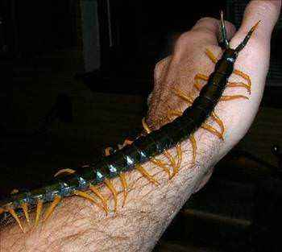
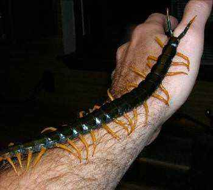

Kırkayaklar (Diplopoda), yavaş hareket eden, uzun segmentli vücuda sahip, eklembacaklılar şubesine ait bir çok bacaklılar sınıfı.
13.000 türlük çok bacaklılar içinde 10.000 tür ile başı çekerler.Sayıları 36 dan 400 e kadar olan bacaklara sahiptir. En fazla ayağı olan kırkayak türü 750 ayaklı
Illacme plenipes türüdür. Erkeklerinde yaklaşık 660, dişilerinde ise 750 ayak bulunur. Çıyanlarla aynı sınıfta ele alınırlar. Her segmentte ikişer çift bacak bulunur ve
bacak sayısı çıyanlarınkinden daha fazladır. Çıyanlar etçil ve zehirliyken, kırkayaklar otçul/çürükçül ve zehirsizdir. Vücutları da çıyanlara göre daha sert ve silindiriktir.
 
